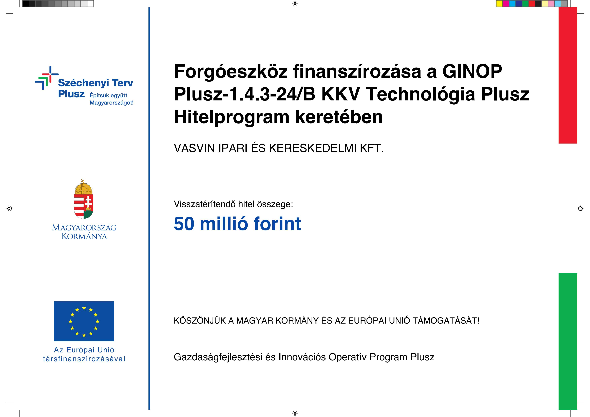
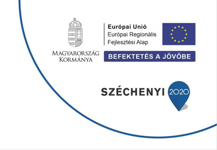
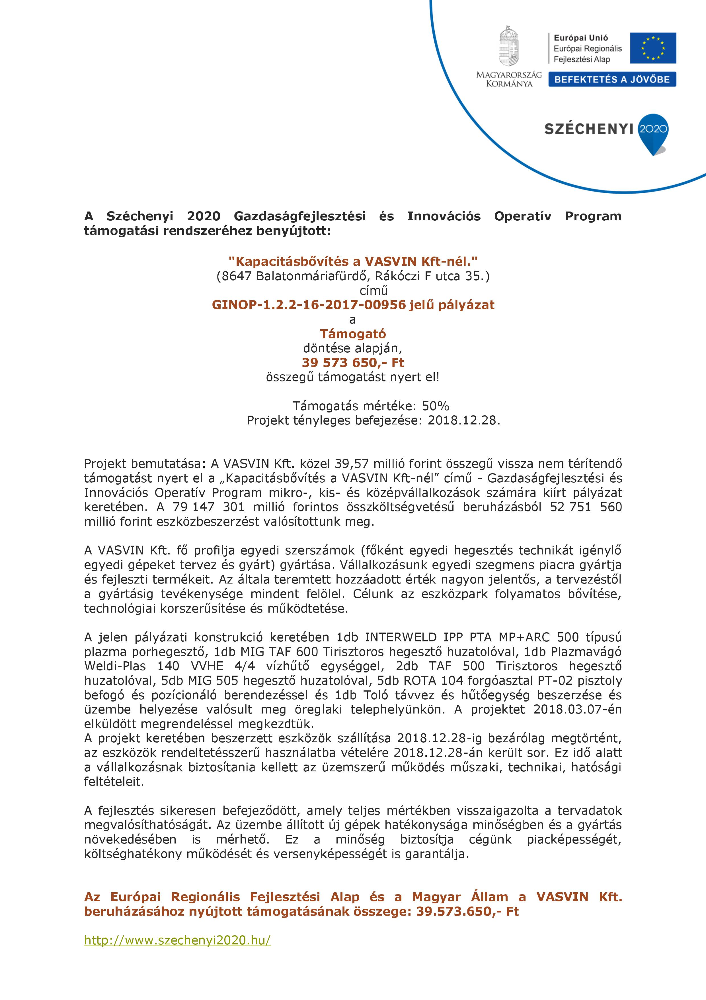
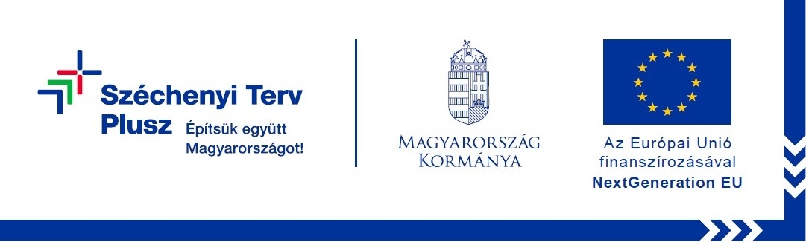

Hegesztés és felrakás
MIG/MAG, PTA és lézerhegesztési technológiák a kopásállóság növelésére és az alkatrészek élettartamának meghosszabbítására.
Ipari megoldások · Magyarország
Kopásnak kitett alkatrészek gyártása és felújítása hegesztéssel – a megbízható ipari működésért.
Ismerje meg szolgáltatásainkat↘Cégünk, a VASVIN Kft. erős koptató hatásoknak kitett alkatrészek felújításával és gyártásával foglalkozik, elsősorban németországi és ausztriai partnerek számára.
Technológiánk a kézi és gépesített felrakó hegesztés. Az igénybevételhez választott hegesztőhuzalokkal a cementipar, a hulladékfeldolgozás és a faipar számára gyártunk és újítunk fel alkatrészeket.
Ha a felújítás helyszíni munkát igényel, munkatársaink a megrendelő telephelyén végzik el a feladatot. Tevékenységünk a felhegesztés mellett forgácsolásra, hajlításra és lángvágásra is kiterjed.
MIG/MAG, PTA és lézerhegesztési technológiák a kopásállóság növelésére és az alkatrészek élettartamának meghosszabbítására.
Forgácsolt és hegesztett acélalkatrészek, csigák és cellás adagolók gyártása, javítása és felújítása.
Szakembereink szükség esetén a megrendelő telephelyén végzik el a felújítást és karbantartási munkákat.
FŐBB TEVÉKENYSÉGEINK
FELHASZNÁLÁSI TERÜLETEK
Cementipari megoldásaink például egyenes, ívelt és lépcsős kopólapok, kopólemezek, páncélzatok, kaparók, csúszdák, surrantók, bélések, ventilátorok, cellás adagolók, bélelt csővezetékek, őrlőkerekek, törőkalapácsok, törőgörgők, pofás törők, szállítócsigák és rosták. Alkatrészeket hulladékfeldolgozó és faipari berendezésekhez is gyártunk, illetve felújítunk.
A folyamatos fejlesztés a megbízható ipari teljesítmény és a hosszú távú együttműködések alapja.

GINOP PLUSZFOLYAMATBAN LÉVŐ FEJLESZTÉS
A VASVIN Kft. fejlesztései a vállalkozás technológiai hátterének és termelési kapacitásának korszerűsítését szolgálják. A projekthez kapcsolódó hivatalos tájékoztató a képre kattintva megtekinthető.
Tájékoztató megnyitása↗
GINOP-8.3.5-18/BSZÉCHÉNYI 2020
Kedvezményezett: VASVIN Ipari és Kereskedelmi Kft. A GINOP-8.3.5-18/B Mikro-, kis- és középvállalkozások technológiai korszerűsítése célú hitelprogram a vállalkozások zavartalan likvid működéséhez szükséges készletbeszerzések és működési költségek finanszírozását szolgálta. Szerződött támogatás összege: 80 300 000 Ft. Felhívásazonosító: H-EKTG2/108964/2023/470699/001. Tervezett befejezés: 2028. március 15.
Tájékoztató megnyitása↗
2018KAPACITÁSBŐVÍTÉS
A 2018-as fejlesztés a vállalkozás kapacitásának bővítését célozta. A projekt tájékoztatója képként megnyitható.
Tájékoztató megnyitása↗
SZÉCHÉNYI TERV PLUSZTÁMOGATÁSI INFORMÁCIÓ
A kapcsolódó kedvezményezetti tájékoztató és támogatási információk az eredeti képen olvashatók.
Tájékoztató megnyitása↗A pályázatokhoz kapcsolódó eredeti képes tájékoztatók változatlanul elérhetők. A hivatalos támogatási adatoknál mindig az eredeti dokumentum az irányadó.
Karbantartási vagy gyártási feladattal kapcsolatban keressen minket közvetlenül e-mailben vagy telefonon.
vasvin@t-online.hu ↗8647 Balatonmáriafürdő
Keszeg u. 46., Magyarország
8697 Öreglak
Vidámháza u. 6., Magyarország
Hétfő – péntek, 8:00–17:00